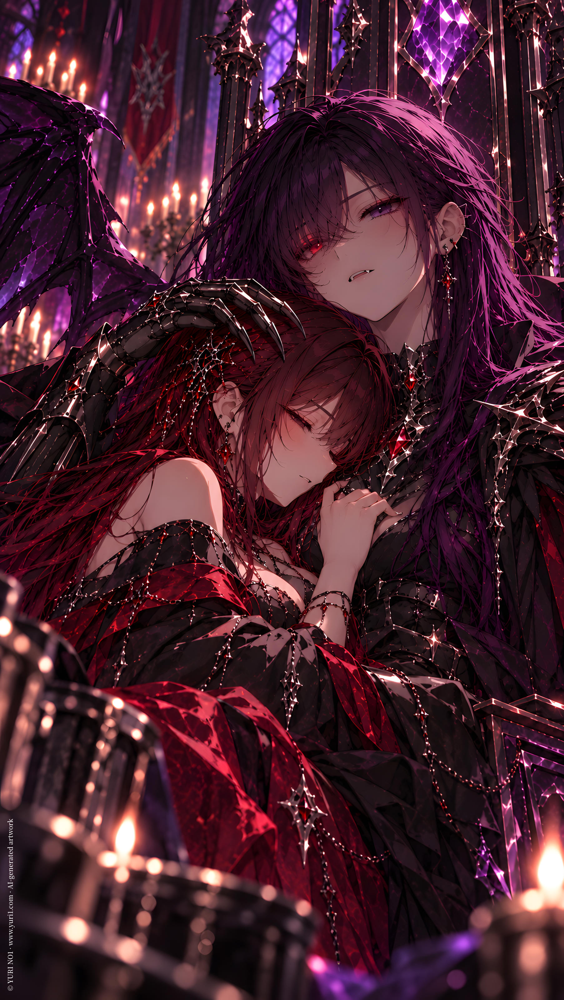

ORIGINAL TRACK ／ YURI NO1
Wife?!
L.Night · Contract Me
Lyrics · Base Script
[Intro — Otherworldly Whisper]
Joddeb... fjehsnde...
Kcjie...?
[Pause]
...Wife?
[Verse 1]
Centuries sleeping
Nothing but night
Then someone calls me
Back into light
A voice I remember
A face almost right
And why are you standing
So close to me tonight?
You kneel at my throne
You call me "master"
I move away
You follow faster
You reach through the mist
I nearly disappear
What kind of summoning
Is happening here?
[Pre-Chorus]
Contract?
Nothing.
Devotion?
Nothing.
"You join me"?
What?!
Then you shouted—
"Protect me,
you idiot, L.Night!"
[Chorus]
Wife?!
Wait—
Why do you look like her?
Wife?!
No—
That cannot be the word
Same fire
Same eyes
Same impossible nerve
You come one step closer
I take one step first—
Back.
Wife?!
No, no, no
You're E.Red
So why does my heart
Remember you instead?
[Verse 2]
I watched my wife
Leave long ago
I know what I saw
I know what I know
Then you wear the ring
Like it belongs there
And suddenly I find
I'm trying not to stare
You sit too close
I move away
You catch my sleeve
I have nothing to say
"I'm warm."
"The window's open."
...That proves nothing.
Stop smiling like that.
[Whisper]
You're troublesome.
[Pre-Chorus]
The ring knows you
The spell knew you
Even before
I understood you
Those ancient words
You learned by heart
Were never really magic—
They were a call from the start
[Chorus]
Wife?!
Wait—
Why do you look like her?
Wife?!
No—
That cannot be the word
Same fire
Same voice
Same way you pull me near
I survived a thousand battles
But apparently
I should fear—
You.
Wife?!
No, no, no
You're E.Red
So why does my heart
Remember you instead?
[Bridge — Spoken / Rapid]
N.White touched your tie.
I noticed.
D.Golden wanted to take you home.
I noticed.
D.Dark was flirting with you.
I noticed.
Am I jealous?
No.
I'm concerned about your safety.
[Pause]
...Obviously.
[Whisper]
Stop laughing.
[Bridge — Otherworldly]
Joddeb...
Kcjie...
Fjehsnde...
Words from another world
A promise from another life
Protect you
Find you
Know you
Even if I wake
A thousand years too late
[Final Chorus]
Wife?!
Oh—
There it is again
Wife...
Maybe
I remember when
Same soul
New name
Still pulling me inside
You ask me for a contract
Like you haven't had me
All this time
Wife...
Fine.
Come closer, E.Red
If the ring chose you
If my heart knows you
Maybe I don't need
To understand it yet
[Outro — Soft]
"Make the contract with me..."
[Pause]
Alright.
I know.
[Whisper]
...Wife.
YURI NO1 Music / AI Generated Music / https://music.yuri1.com